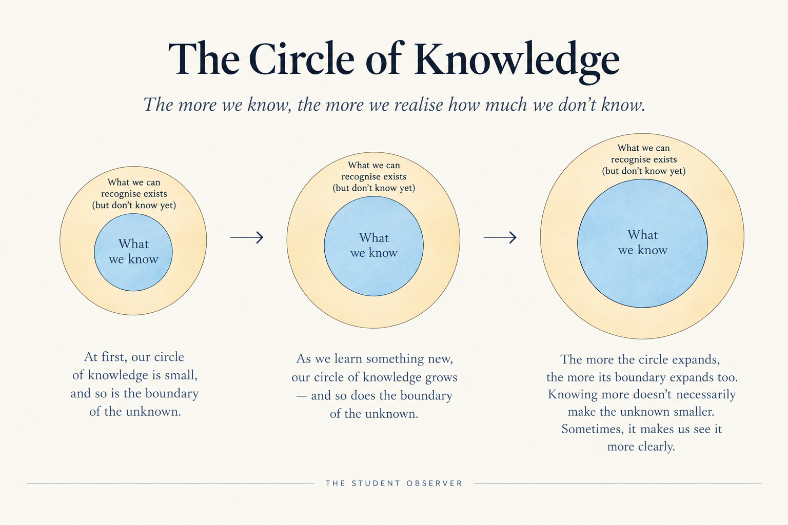

A few days back, in a History class, I asked a question: “Why is Asia named Asia?”
My teacher was explaining how America got its name from Amerigo Vespucci, an Italian explorer, when this question simply came to my mind. I asked it. I wasn't trying to make a connection or prove a point. Sometimes my questions make sense, and sometimes they don't. I just ask what comes to my mind.
What surprised me was that, later, a classmate asked me, “Why is your name Aashi?” I gave him three reasons why my parents had named me Aashi. But the question stayed with me. Not the question about my name—the question about questions themselves. Why do some questions seem silly simply because we don't know the answer to them?
My teacher had simply said that she didn't know much about why Asia was called Asia. And that led me to explore the question at home later. I found that even the origin of the word “Asia” isn't as simple as I had imagined. There are ancient explanations connecting it with the east, with the place where the sun rises, but the exact origin is still debated. And I kept wondering: if my teacher had instead told me that my question was stupid, or irrelevant to the class, would I ever have looked for the answer?
Somehow, the most humble and the most knowledgeable people I have met have often been the same people. My mother often says, “Knowledge lets go of ignorance,” and I have experienced that in my own life too. The more a person learns, the more they seem to realise how much they do not know. Perhaps that is why genuine knowledge does not always make a person eager to prove that they are right. Sometimes, it makes them more comfortable with saying, “I don't know.” And maybe that is also why they are more willing to listen to a question, even when they don't immediately understand where it came from.
I thought this was something not many people realised. I was wrong.
That same day, I had a long conversation with two of my classmates. It wasn't one of those random “Did you watch that movie?” conversations that somehow last through a free period. We began with philosophy, moved into psychology and some of the most human experiences that we still cannot completely explain, and by the time the bell rang, we were discussing the problems of language and translation in literature. Somewhere in between, I even drew an illustration of what we were trying to understand.
Our idea was simple enough to draw.

I imagined our knowledge as a circle, surrounded by everything we could recognise existed but did not yet understand. As the circle grew, so did its boundary. Learning something new did not bring us closer to knowing everything; it simply showed us more of what we had yet to understand. The more the circle expanded, the more clearly I could see the unknown around it.
When both of them agreed with the idea, I added another thought. “The thing we are discussing is a lot like the Nāsadīya Sūkta in the Rigveda. I have read a translation of it in a book,” I said.
The translation I had read began by questioning what existed before creation and ended somewhere even more unsettling: perhaps the one who watches over everything knows how creation happened—and perhaps even that one does not know. What stayed with me was not a particular answer, but the willingness to leave the question open.
There was another detail I noticed. The translation in my book repeatedly used “he” for the being or principle being referred to. I found myself uncomfortable with that certainty. Another translation I later came across used “the One” instead. I preferred that wording—not because it gives us the correct answer, but because it does not turn something we do not understand into a male figure simply because English asks us to choose a pronoun. Even here, translation was not merely about replacing one word with another. It was also about the assumptions carried by the words we choose.
That also made me think about literature. Maybe literature does not really succeed when it explains a feeling to us. It succeeds when, somehow, it makes us go through that feeling ourselves. You cannot tell someone exactly what sadness feels like, or what it is like to miss someone, and expect them to feel the same thing just because you described it well. You can only give them the words, and hope that somewhere in those words, they find the feeling themselves.
By the time the bell rang, I realised how far our conversation had gone. We had started by talking about knowledge, but had ended up questioning how much can actually be known, how much language can express, and whether an answer is always the end of a question.
I have changed my opinions many times. Sometimes because I learnt something new, sometimes because someone asked me a question I had never thought about, and sometimes simply because I questioned my own reasoning long enough. I once wrote a poem after seeing a question on Instagram asking, without using your name, religion, gender or other labels, “Who are you?” My answer was not a list of things about myself. I wrote about being the one who questions everything—the one who questions what she believes, what made her believe it, what she knows, what she does not know, and even the things she does not know that she does not know. I ended it simply: “I am the one who asks.”
Maybe that is what I have slowly started to understand about knowledge. It isn't about becoming someone who has an answer to everything. It is about becoming someone who can change an answer when there is a reason to, say “I don't know” when there isn't one, and still remain curious enough to look for one.
I think that is also why my opinions have changed so many times. An answer that once seemed completely right to me can start looking different when I learn something new or simply ask myself why I believed it in the first place. I don't think changing your mind always means that you were wrong before. Sometimes it just means that you have learnt something you didn't know then. And sometimes, the answer you were so sure about turns into another question.
I have noticed that my teachers usually do something very simple when they don't know the answer to a question. They say so. Sometimes they tell us that they are unsure, and sometimes they look it up themselves. They don't seem embarrassed by not knowing. In fact, I think that has taught me something more valuable than many answers could have: knowing everything is not the point. None of us knows everything. The important part is being able to accept that we don't know something and still be willing to learn it.